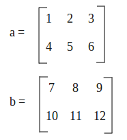
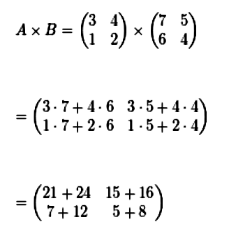
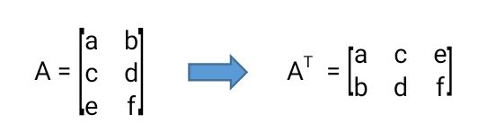

Materi Proyek
Matriks adalah susunan bilangan, simbol, atau ekspresi yang diatur dalam bentuk persegi panjang menggunakan baris dan kolom. Matriks digunakan untuk merepresentasikan data atau menyelesaikan berbagai masalah matematika dan sains. Setiap elemen di dalam matriks terletak pada posisi tertentu yang ditentukan oleh nomor baris dan kolomnya.
Berikut adalah rangkuman materi tentang matriks yang mencakup definisi, operasi, dan aplikasinya: 1. Pengertian Matriks Matriks adalah susunan bilangan, simbol, atau ekspresi yang diatur dalam bentuk persegi panjang dalam baris dan kolom. Matriks dinotasikan sebagai 𝐴 = [𝑎𝑖𝑗] A=[aij], di mana 𝑎𝑖𝑗aijadalah elemen matriks di baris ke- 𝑖i dan kolom ke-𝑗j. Dimensi Matriks Dimensi matriks ditentukan oleh jumlah baris (𝑚 m) dan kolom (𝑛n), ditulis sebagai 𝑚×𝑛m×n. Contoh:
2. Jenis-Jenis Matriks Matriks Persegi: Matriks dengan jumlah baris sama dengan kolom ( 𝑚 = 𝑛 m=n).Matriks Nol: Matriks dengan semua elemen bernilai nol. 𝑂=[0000] O=[0000] Matriks Identitas: Matriks persegi dengan elemen diagonal utama bernilai 1 dan elemen lainnya bernilai 0. 𝐼 =[1001] I=[1001] Matriks Diagonal: Matriks persegi di mana semua elemen di luar diagonal utama bernilai nol. Matriks Segitiga: Matriks persegi yang elemen di bawah atau di atas diagonal utamanya bernilai nol.
3. Operasi Matriks
-Penjumlahan dan Pengurangan
Hanya bisa dilakukan pada matriks dengan dimensi yang sama,
Elemen-elemen yang bersesuaian dijumlahkan atau dikurangkan.

-Perkalian Matriks Perkalian dua matriks A dan B hanya dapat dilakukan jika jumlah kolom A sama dengan jumlah baris B. 
-Transpose Matriks Transpose dilakukan dengan menukar baris menjadi kolom. 
4. Determinant dan Invers Matriks -Determinan Matriks Determinan hanya berlaku untuk matriks persegi dan dihitung dengan rumus khusus. - Invers Matriks
5. Penerapan Matriks dalam Kehidupan Grafik dan Jaringan: Matriks adjacency digunakan untuk merepresentasikan hubungan dalam jaringan. Pengolahan Gambar: Matriks merepresentasikan pixel pada gambar. Sistem Persamaan Linear: Matriks digunakan untuk menyelesaikan SPL dengan metode eliminasi Gauss. Machine Learning: Matriks digunakan dalam perhitungan data dan algoritma deep learning.